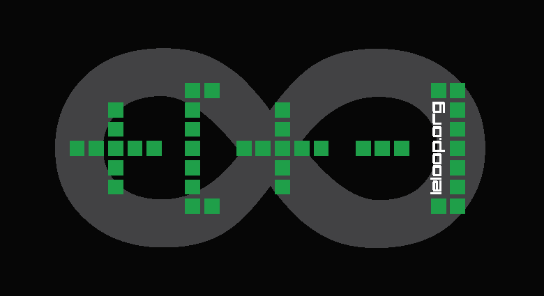

17 Janvier 2015
Présentation
Le FhAP, Festival hAcktiviste et Politique, est un événement volontairement ouvert sur la forme et le contenu. Notre fil d'Ariane : provoquer des échanges autour de l'hacktivisme. Interroger des organisations ayant de fortes implications dans le concret sur leurs usages du numérique. Mais aussi l'inverse : faire (ou rappeler) les liens entre les concepts, la théorie des outils numériques et leurs usages concrets. Croiser les pratiques de différentes organisations sur le « comment » plutôt que sur le « pourquoi ». Questionner ceux qui d'habitude questionnent. Mélanger tout ça et voir ce qu'il en sort.
Le L∞p ouvre ses portes, pour la première édition du Festival hAcktiviste et Politique.
Cette édition du FhAP se tiendra le 17 janvier 2015 à partir de midi dans les locaux du Jardin d'Alice, de la Black Boxe, du L∞p et de la Gare XP.
Le FhAP s'appuie sur la participation de tout le monde, et de vous en particulier. Dans la grande culture du BIY - Bricole It Yourself - le FhAP compte sur vous pour se désorganiser et être quelque chose de mémorable, d'intéressant et de fun !La FhAP Team.
Restauration
Un dîner végétarien à prix libre sera servi vers 20h. Pour que nous puissions prévoir les quantités au mieux, merci de nous indiquer par ici avant vendredi 16 janvier, 12h, si vous souhaitez manger sur place.
PLUS D'INFOS
Quelques principes à garder en tête lors du FhAP:
-
 Demandez un accord pour toute captation (audio, photo, vidéo) à toute personne présente dans le champ de votre appareil
(oui, cela inclut les Google Glass et autres trucs-machins). Ceci s'applique également à tout matériel ou
élément fortement reconnaissable d'une personne (ordinateur, tatouage, …).
Demandez un accord pour toute captation (audio, photo, vidéo) à toute personne présente dans le champ de votre appareil
(oui, cela inclut les Google Glass et autres trucs-machins). Ceci s'applique également à tout matériel ou
élément fortement reconnaissable d'une personne (ordinateur, tatouage, …).
-
 Soyez prévenant⋅e⋅s et inclusif⋅ve⋅s : sexisme, racisme, homophobie et autres exclusions
sont à proscrire. Pour le bien-être de tou⋅te⋅s.
Soyez prévenant⋅e⋅s et inclusif⋅ve⋅s : sexisme, racisme, homophobie et autres exclusions
sont à proscrire. Pour le bien-être de tou⋅te⋅s.
- En cas de problème ou pour signaler conflit, vous pouvez contacter les organisateurs/rices sur place, en direct ou par téléphone. Nous tenterons de résoudre la situation ensemble.
- En cas de conflit : dialoguons. Si quelqu'un vous signale une remarque ou une action gênante de votre part, écoutez, échangez. Si cela est impossible, venez nous trouver pour une médiation.
Autel Kopimiste 
Un Autel Kopimiste est une borne d’échange de données aléatoires et anonyme. Un autel de prière USB est ici installé, pour introniser les padawans kopimistes.Apportez vos clés usb comportant du contenu (ou pas) que vous souhaitez partager avec d'autres personnes et laissez-vous guider.
-

- Infos pratiques
- 20 rue de Reuilly
75012 Paris -
Reuilly-Diderot


-
Faidherbe-Chaligny

-
Hôpital Saint-Antoine

- Contact
-

-

Programme
| Samedi 17 Janvier |
||||
|---|---|---|---|---|
| Samedi 17 Janvier | Salle Jardin (Rez De Chaussée) | Salle Bibliothèque (1er étage) | Ateliers BlackLoop (Sous-sol) | Gare XP |
| 12h - 13h | Ouverture des portes | |||
| 13h - 14h | Débat croisé avec Regards Citoyens et Al Bawsala | Demain, la fin du pétrole et le temps qu'il fera par Antoine | Toute la journée : Ateliers enfants XenPonic Projection de documentaires et ciné concerts (salle de projection) FoodHack (cuisine) |
|
| 14h - 15h | ||||
| 15h - 16h | Débat croisé : actions et créations d'outils citoyens par Les Engraineurs et Yoann | Geeks à l'écran par Arroway (Le cinéma est politique) | Pourquoi et comment protéger ses emails ? par Pérégrine |
|
| 16h - 17h | à la frontière. sur les bords. au milieu. expériences partagés entre art-hack-tivisme et écosophie en Colombie. par Paula Vélez |
Interview de fo0 (RSF, FIDH) par ToM | ||
| 17h - 18h | Inconférence (tables rondes ouvertes) | Atelier piphone et memopol avec Yoann, Mindiell | ||
| 18h - 18h30 | Politiser l'informatique : la souveraineté technologique à Cuba par Natalia |
Discussion autour des libertés individuelles sur Internet par Sam |
||
| 18h30 - 19h | Sous-surveillance.net par n3b | |||
| 19h - 19h30 | Comment chaorganiser une chiffrofête par Axel Simon |
Survie numérique en squat, Squat.net et + si aff par ToM |
||
| 19h30 - 20h | Ilico, motion contre le filtrage par Taziden |
|||
| 20h - 22h | VJing par Neologos et projection laser Fermeture du festival à 22h |
|||
| 20h - 22h | ||||